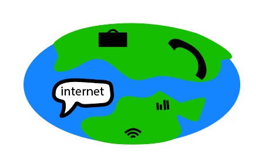
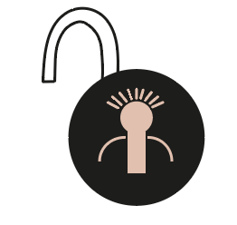

Mijn mening over de goede en slechte kanten van het web.
Wat ik goed vind aan het web is dat je heel makkelijk overal bij kan en heel gemakkelijk mensen kan bereiken, waardoor je heel snel je dingen kan doen als je dat met elkaar moet werken aan een project. Ook vind ik het web goed, zodat je makkelijk met vrienden kan communiceren om dingen samen te doen. Hierdoor kan je ook veel nieuwe vrienden maken met elkaar en verschillende soorten culturen kunnen delen met elkaar.
Verder vind ik het web ook erg goed aangezien bedrijven makkelijk met elkaar zaken kunnen doen en de overheid ook makkelijk regels kunnen maken met deze bedrijven, waardoor de mensenrechten bijvoorbeeld steeds beter worden en de mensen steeds beter worden beschermd tegen het web.
Ook is het web makkelijk als je bepaalde dingen niet begrijpt en ze snel en duidelijk op kan zoeken, waardoor je minder spullen zoals een woordenboek bij je hoeft te hebben. Het web scheelt dus ook dat je steeds minder spullen bij je hoeft te hebben.
Algemeen vind ik dus dat het web een goede toevoeging is voor de wereld niet alleen voor communicatie, maar ook voor alledaagse dingen, zoals ik al zei dat je minder spullen mee hoeft te nemen als eerst.
De voordelen op een rijtje:

Ik vind het web ook wel slecht, aangezien je minder privacy hebt als eerst. Dit komt doordat je informatie online gedeeld wordt in ruil voor geld, zodat grote bedrijven meer geld verdienen. Ook vind ik het web slecht omdat je steeds meer mensen minder buiten ziet en als deze mensen buiten zijn ze vaak op hun mobiel zitten. Hierdoor worden mensen continu minder sociaal en is er minder aanspraak als mensen elkaar tegenkomen. De mensen zijn dus eigenlijk aan het desocializen. Als dit gebeurt zijn mensen steeds minder in contact met elkaar en zijn ze ook continu bezig met hun werk. Als mensen continu bezig zijn met hun werk kan het er ook voor zorgen dat mensen meer stress ervaren, als dit gebeurt zullen mensen eerder een burn-out krijgen. Als mensen een burn-out hebben zie je vaak ook dat ze minder op hun telefoon zitten. Dit vind ik dan ook een goed voorbeeld, aangezien je dus ziet dat als mensen niet werken ze minder op hun telefoon zitten.
Daarom vind ik het web dus niet goed, aangezien het ten eerste je privacy wordt geschonden en ten tweede kan het de mensen een stuk meer stress geven, waardoor het de mensen slecht beïnvloedt en ik het dus ook wel een slecht ding is.
Hoe het ene tot het andere leidt:
